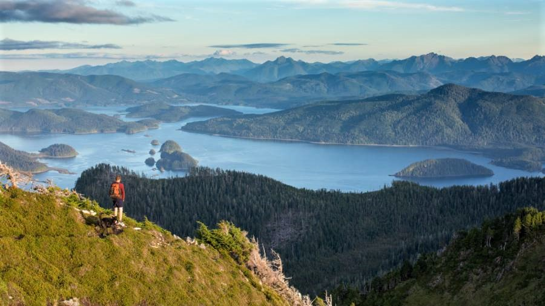
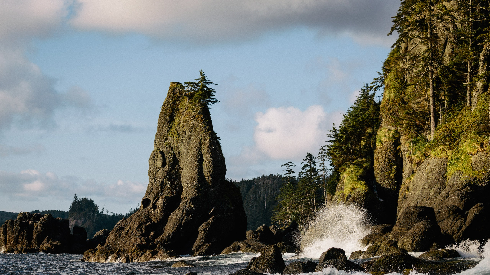
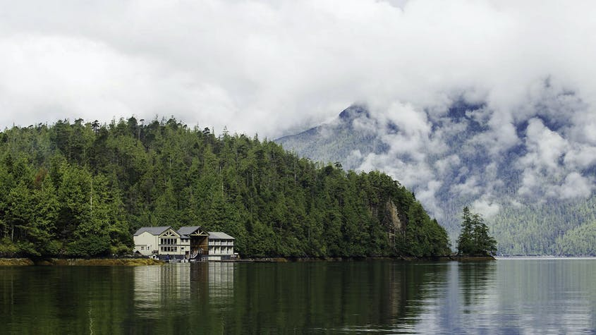
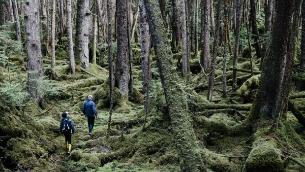

What to do on Haida Gwaii?
There is a variety of activities on Haida Gwaii. You can explore the haida cultural sites dating back thousands of years, visit Tow Hill in Naikoon Provincial Park, whale watch and even fish. If you would like to discover more to do while visiting Haida Gwaii, click the image to the left.
Where is Haida Gwaii?
Haida Gwaii is a chain of islands off the central western coast of British Columbia, Canada. If you would like to see a more detailed map of Haida Gwaii, click the image to the right.
How to get to Haida Gwaii?
You can travel to Haida Gwaii via boat or floatplane, but you must have a permit to travel to the island. If you want to find out more about traveling to Haida Gwaii, click the image to the left.





Want to see more images of Haida Gwaii? Click the image to the right!